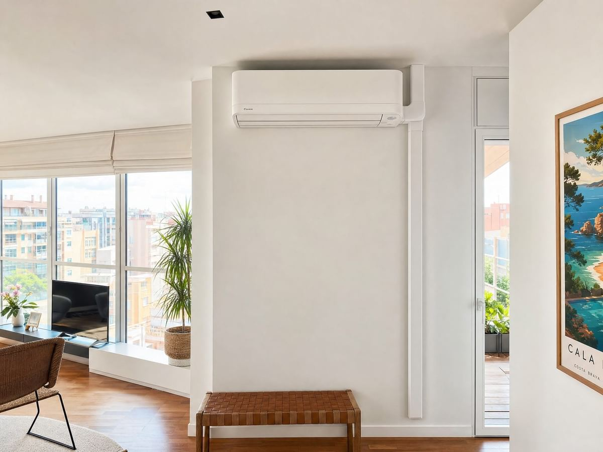
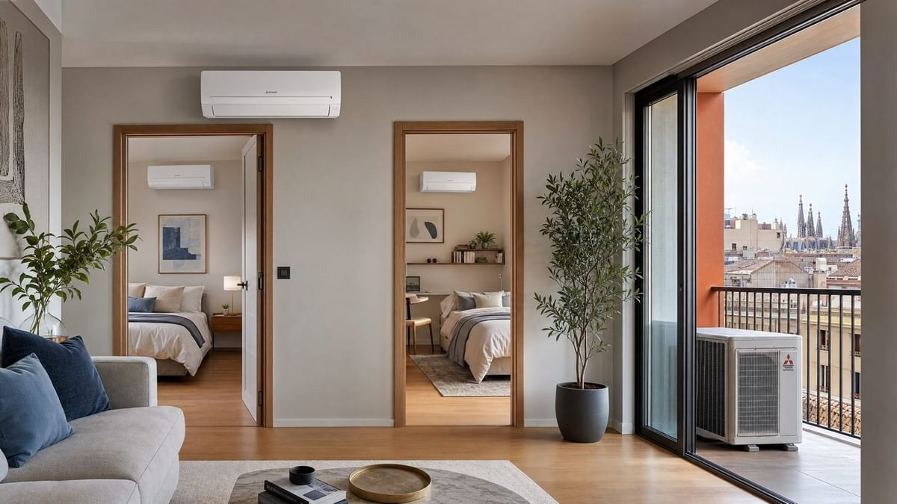
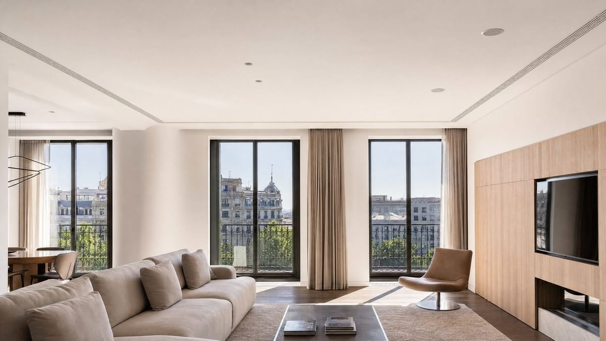

Instalamos en los 11 barrios de Horta-Guinardó, del Baix Guinardó a Sant Genís. Respuesta en menos de 2 h en horario de atención.
Horta-Guinardó es el distrito de las cuestas. Sus 11 barrios suben desde el Baix Guinardó, junto al Eixample, hasta la sierra de Collserola, con calles empinadas en el Carmel, Can Baró o la Teixonera. Horta fue un municipio propio hasta 1904.
Las viviendas son muy variadas: casas antiguas en el núcleo de Horta, torres con jardín en la Font d'en Fargues, bloques de los años 60 en Montbau y pisos en pendiente en el Carmel. En las laderas, muchos pisos tienen terraza o azotea, pero el acceso para subir el equipo hay que planificarlo.
Hacemos visita previa en todo el distrito: vemos el acceso, dónde va la unidad exterior y te damos un precio cerrado.
Un código postal puede incluir calles de distritos vecinos. Sin coste adicional de desplazamiento.
Son los 11 barrios oficiales del distrito según el Ajuntament de Barcelona. Los agrupamos por zonas parecidas.
Viviendas: fincas y bloques de pisos junto al Eixample y alrededor del Parc del Guinardó.
Instalación: azotea comunitaria o patio; multisplit si quieres varias estancias.
Parc del Guinardó, Ronda del Guinardó, metro Guinardó | Hospital de Sant Pau
Viviendas: pisos y casas en calles con mucha pendiente, a veces con escaleras.
Instalación: planificamos la subida del equipo; la unidad suele ir en la terraza o la azotea.
Turó de la Rovira (búnkers del Carmel), metro El Carmel, metro El Coll | La Teixonera
Viviendas: el antiguo pueblo, con casas bajas y calles tranquilas, y bloques alrededor.
Instalación: en casas bajas, unidad en el patio o la azotea propia.
Carrer d'Aiguafreda, Plaça d'Eivissa, metro Horta
Viviendas: ciudad jardín de torres de principios del siglo XX.
Instalación: conductos o multisplit; suele haber sitio para la unidad en el jardín.
Passeig de la Font d'en Fargues, metro Maragall (cerca)
Viviendas: bloques de los años 50 y 60 y casas al pie de Collserola.
Instalación: azotea comunitaria; en la parte alta, bomba de calor para el invierno.
Hospital Vall d'Hebron, Velòdrom d'Horta, metro Montbau
Como en todo Barcelona, la normativa de paisaje urbano evita que la unidad exterior se vea desde la calle, y la fachada es un elemento común que necesita el acuerdo de la comunidad.
En las laderas, las terrazas y azoteas dan más opciones para esconder la unidad. Lo que más cambia es la logística: calles estrechas, cuestas y edificios sin ascensor.
Más detalle en la guía normativa para instalar aire acondicionado en Barcelona.

Para habitaciones y salones. Instalación en 1 día. Consulta precio.
Ver precios →
Para todo el piso. Una unidad exterior, varias interiores. Desde 1.487€ +IVA.
Ver precios →
Climatización invisible. Ideal para reformas. Desde 2.397 € + IVA.
Ver precios →Antes de contratar, comprueba que el instalador que te visita sea el mismo que instala y certifica, que evalúe tu vivienda antes de dar un precio cerrado y que ofrezca garantía por escrito. En Horta-Guinardó trabajamos así: visita previa, precio claro, garantía de instalación de 1 año y respuesta en menos de 2 h en horario de atención.
Servicio excepcional, Júnior vino enseguida a realizar el presupuesto de aire acondicionado e instalación. En dos días volvió, en fin de semana, a instalar el aire. Se mostró profesional y muy amable. Quedó todo instalado en el mismo día y yo quedé encantada.
Necesitaba instalar dos AC en poco tiempo y Junior respondió el mismo día a mi mensaje. Yo quería comprar por mis cuentas los aires y no hubo problema. La obra ha quedado muy bien. Recomiendo.
Súper servicios. Recomiendo.
Reseñas publicadas por los autores en Google. Zervitecnics no modifica el contenido.
Distritos vecinos: Gràcia · Eixample · Nou Barris · Sant Andreu
Guías útiles para Horta-Guinardó: Split, multisplit o conductos · Consumo real del aire acondicionado · Qué frigorías necesito
¿Ya tienes equipo? Mantenimiento de aire acondicionado en Horta-Guinardó
Fincas del Guinardó, el Carmel y Horta: toda la red de marcas y potencias de Barcelona disponible en el distrito.
Horta-Guinardó forma parte de la ciudad de Barcelona; cuando entres a una ficha de marca o de potencia verás la página general de Barcelona con las condiciones de servicio aplicables también a Horta-Guinardó.
¿Ya tienes aire acondicionado instalado? También hacemos mantenimiento preventivo (70 € + IVA), correctivo (130 € + IVA) y diagnóstico técnico en Horta-Guinardó.
Ver mantenimiento en Horta-Guinardó →Respuesta en menos de 2 h en horario de atención. Sin compromiso.